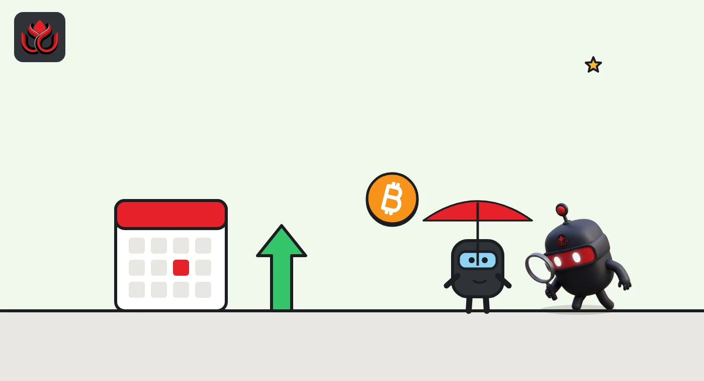

Two Fed officials voted for a hike and lost 10 to 2. Is December next?
The Fed held rates at 3.75% to 4% on October 28, but Lisa Cook and Beth Hammack wanted a quarter-point rise. With September inflation at 3.7%, the December meeting is now the one to watch.
Key points
- The Fed held its key rate at 3.75% to 4% on October 28, 2026, but two officials, Lisa Cook and Beth Hammack, voted for a quarter-point hike.
- In September, 16 of 18 Fed officials expected rates to end 2026 above today's range.
- Bitcoin rose less than 1% on the day, then slipped to about $77,839 the next day.
A hold with two dissents
The US Federal Reserve left interest rates unchanged on October 28, 2026, keeping the federal funds target range at 3.75% to 4%. The decision, released at 2:00 p.m. ET, was not unanimous. The Fed's statement showed a 10 to 2 vote, with Governor Lisa D. Cook and Cleveland Fed President Beth M. Hammack both preferring to raise rates by a quarter point.
Two votes for a hike at a meeting that held steady is a clear signal. Part of the committee wants tighter policy, not looser.
The hold followed a quarter-point increase on September 16, which was approved 12 to 0. That was the first rate rise since July 2023, according to the Fed's record of rate changes. The Fed had cut rates three times in late 2025, to 3.50% to 3.75%, before reversing course.
What the statement said
The Fed's description of the economy was upbeat. It said economic activity is expanding at a strong pace and that domestic spending has been resilient. It pointed to strong productivity growth and solid business investment. Job gains have kept pace with the growth of the workforce, it said, and unemployment has changed little. Geopolitical developments, it added, keep uncertainty elevated.
On prices, the language stayed firm. The statement described inflation as elevated and said the Fed wants a timely return to its 2% goal, adding: "The Committee will deliver price stability."
The rate the Fed pays banks on their reserves stayed at 3.90%, effective October 29, according to the implementation note. The Fed also said it will keep reserves in the banking system ample.
The September hike passed with no dissent. Six weeks later, two voters wanted to go further. The statement said more information will help the committee decide on the right stance, which leaves the door open both ways.
Where officials see rates by year-end
The Fed's own September projections show where officials expected rates to end the year. Each of the 18 participants submits a dot, a personal forecast for the year-end rate. The median was 4.1%, the midpoint of a 4% to 4.25% range. With the range now at 3.75% to 4%, that implies one more quarter-point hike in 2026.
Twelve officials placed their dot at that level, four went higher at 4.375%, and only two expected no further move. In other words, 16 of 18 officials saw rates above today's range by the end of the year. The same projections put median PCE inflation, the Fed's preferred price gauge, at 3.7% for 2026.
Fed officials' year-end 2026 rate projections (September)
officials
Source: Federal Reserve, Summary of Economic Projections, September 16, 2026
How bitcoin reacted
Bitcoin took the decision calmly. CoinGecko's daily data show a close of about $81,274 on October 28, up from $80,801 the day before. That is a gain of less than 1% on the day of the decision.
The quiet did not last. Bitcoin closed at about $77,839 on October 29 and $78,311 on November 1, according to CoinGecko. The Fed decision was one of several inputs that week, so the later drop cannot be pinned on the statement alone.
A muted first reaction made sense. The September projections had already shown most officials expecting rates above today's level by year-end, so a hold with two hawkish dissents fit what markets had been told.

What could decide December
The case for a December hike rests on data the Fed has already seen. September consumer prices rose 3.7% from a year earlier, the Bureau of Labor Statistics said on October 14, up from 3.4% in August. Energy prices were up 20.4% over the year, and gasoline alone rose 9.1% in September. Core inflation, which leaves out food and energy, was lower at 2.6%. Shelter costs rose 3.2% over the year, and airline fares jumped 22.4%.
That split matters. If the jump is mostly energy, some officials may prefer to wait. If it spreads to other prices, the case for a hike gets stronger.
The next big data point is the October CPI report, which the BLS has scheduled for November 10. The Fed's final meeting of the year follows in December.
Timeline
Fed hikes to 3.75% to 4%, first increase since July 2023
September CPI shows inflation at 3.7%
Fed holds rates; Cook and Hammack dissent for a hike
Interest on reserve balances stays at 3.90%
October CPI release scheduled
LC Insight analysis
This section is our reading of the facts above, not a statement of fact.
- We think the two dissents matter more than the hold. When a governor and a regional Fed president both break ranks toward tighter policy, the next move is more likely up than down unless inflation cools fast.
- Bitcoin's flat reaction says the market had already priced a hawkish Fed. The bigger risk for crypto is hikes that keep coming into 2027.
- The Fed called growth strong. That gives it cover to keep tightening and kills the hope that a weak economy forces rate cuts soon.
What's next
- October CPI on November 10
- Fed speeches from Cook and Hammack explaining their dissents
- Minutes of the October meeting, due in about three weeks
- FOMC decision in December
Disclaimer. This article is based on public information and the sources listed below as of the update time shown. It is for information only and is not investment, legal or tax advice. Figures may change as companies and authorities publish new data.
Sources
- Federal Reserve, FOMC statement (October 28, 2026)
- Federal Reserve, Implementation note (October 28, 2026)
- Federal Reserve, FOMC statement (September 16, 2026)
- Federal Reserve, Summary of Economic Projections (September 16, 2026)
- Federal Reserve, Open market operations: rate changes
- US Bureau of Labor Statistics, CPI release (October 14, 2026)
- CoinGecko, Bitcoin historical data (accessed November 2, 2026)